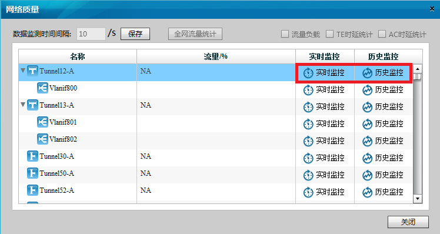
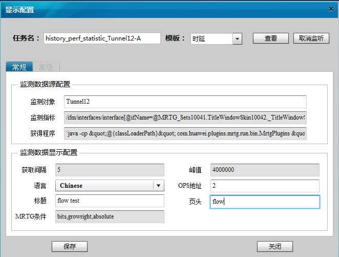

网络质量监控是指对管道和流的时延统计和流量统计。包括实时监控和历史监控。
操作步骤
- 实时监控
- 进入指定域的“Agile TE View”页面。
- 按照以下顺序进入网络质量检测界面：“Agile TE View > 菜单 > Network > 网络质量”。

- （可选）填写“数据监测时间间隔”，然后点击“保存”。调整数据监测的周期。
- 选择要监控的目标管道或流。
- 点击“实时监控”，查看管道或流的时延及流量实时统计信息。
- 创建历史监控记录
- 点击“历史监控”。
- 弹出“显示配置”对话框，按照下述说明填写信息。

- 点击“保存”，保存配置。
- 点击“查看”按钮，可以在新弹出的WEB页面中查看历史监控曲线。